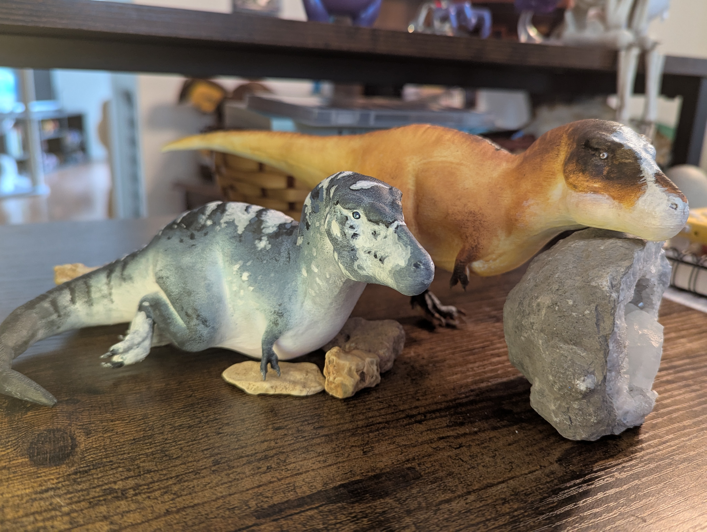

(8/25/2025)
In regards to Josh's inquery regarding the likilood that Tyrannosaurids thrived on carrion, or were mostly scavengers:
Tyrannosaurids were most likely solo apex hunters, most of the evidence as to why, while possibly indicating a lack of context, leads to the terrifying conclusion that Tyrannosaurids were simply that good at stealth and hunting despite their large size.
To this date, no other large scale carnivore has been dated to the Cretaceous period alongside Tyrannosaurus. There are two possible exceptions to this rule, but both pale in comparison: the Dakotaraptor; a large-scale raptor which was found at the bottom of a river, and the Nanotyrannus; a smaller, less bulky version of the Tyrannosaurus.
However, the existence of the Dakotaraptor is highly debated as its skeleton was actually composed of several different types of dinosaurs, though mainly the theory came from specifically a Tyrannosaurus femur and a larger-than-average raptor claw being on top of each other. And while the Nanotyrannus skeleton has been proven to be the same animal, you may have accurately guessed that most likely it is simply a juvenile Tyrannosaurus.
Due to the only two skeletons large enough to even come close to rival tyrannosaurids being lucrative at best, that leaves the only main predators living alongside the Tyrannosaurids microraptors, which were extremely small heavily feathered dinosaurs that primarily hunted rodents and other small reptiles.
This presents an eerie yet fascinating reality that presented a very different type of dinosaur than the media portrays.
The Tyrannosaurus was a titan; on average weighing anywhere between 8 to 12 tons (for context, the average African Elephant weighs 4 to 7 (8,000 to 14,000 lbs.)), could most likely see more colors than a human, and had 360° hearing. Because of the lack of rival predators (excluding other Tyrannosaurids), it's not as concrete as it once was to say that they were scavengers. They most likely were opportunistic scavengers, but considering they didn't hunt in groups, nor would herbivores die often enough from illness or old age, it leads to the conclusion that Tyrannosaurids were quiet, efficient hunters, most like Felidae like tigers, leopards, and jaguars considering they lived in mostly forested land.
On a more speculative side, Tyrannosaurids were probably not completely brown but instead heavily patterned. My own personal theory is that, while they most likely had spots and patterns reminiscent of present-day Felidae, I like to imagine that their patterns were more sporadic akin to horse markings. The reason for this is to replicate the random patterns of light that would make it to the forest floor, and considering that both herbivore and carnivore dinosaurs could see in color, they would be more natural in tone rather than the bright orange of the tiger or the golden yellow of the jaguar or leopard. However, they could also have had grey hues, much like how elephants are grey in color yet roll in dust as both camouflage and bug deterrent.
When creating the sister project for this study, the second step was to pose and paint the dinosaur figurines using this theory:
